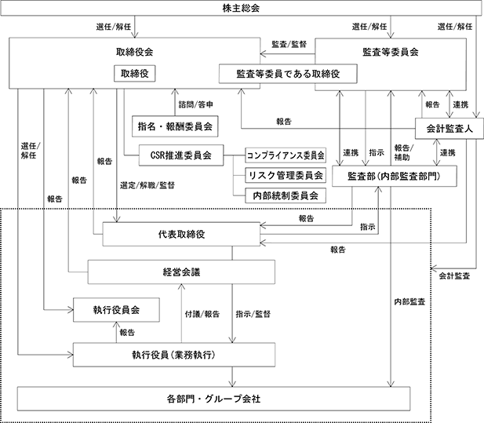

該当事項はありません。
該当事項はありません。
③ 【その他の新株予約権等の状況】
該当事項はありません。
該当事項はありません。
(注) 2007年11月21日に、2007年11月20日最終の株主名簿及び実質株主名簿に記載または記録された株主に対し、所有株式数を１株につき３株の割合をもって分割いたしました。
2023年11月20日現在
(注) 自己株式4,928,881株は、「個人その他」に49,288単元、「単元未満株式の状況」に81株含めて記載しております。なお、自己株式4,928,881株は株主名簿上の株式数であり、実質所有株式数も同一であります。
2023年11月20日現在
(注) １ 上記の他、自己株式4,928千株を保有しております。なお、当該株式は、会社法第308条第２項の規定により議決権を有しておりません。
２ 象印共栄持株会は取引先持株会であり、上記の所有株式数には会社法施行規則第67条第１項の規定により議決権を有していない会員の持分269千株が含まれております。
３ 2021年10月14日付でグレート・フォーチュン・インターナショナル・ディベロップメント・リミテッド及びその共同保有者であるエース・フロンティア・リミテッド、ギャランツジャパン株式会社より大量保有報告書の変更報告書が公衆の縦覧に供されておりますが、当社として2023年11月20日現在の実質所有株式数が確認できませんので、上記大株主の状況には含めておりません。
なお、当該大量保有報告書による2021年10月７日現在の株式保有状況は次のとおりであります。
2023年11月20日現在
(注) 単元未満株式のうち自己株式等に該当する株式数は次のとおりであります。
２ 相互保有により議決権を有しない旭菱倉庫株式会社が、当社の取引先持株会(象印共栄持株会）
経由で共有持分として保有する269,379株のうち269,300株を相互保有株式の欄に含めるとともに、
１単元未満の79株については、これに対応した議決権が生じないこととなった同持株会保有の21株
とあわせて単元未満株式の欄に含めております。
2023年11月20日現在
(注) １ 「他人名義所有株式数」欄に記載しております旭菱倉庫株式会社の株式の名義人は、「象印共栄持株会」 (大阪市北区天満１丁目20番５号)であり、同会名義の株式のうち、同社の持分残高(269,379株)の単元部分を記載しております。
２ 他人名義で所有している理由等
該当事項はありません。
該当事項はありません。
会社法第155条第７号による取得
(注) 当期間における取得自己株式には、2024年１月21日から有価証券報告書提出日までの単元未満株式の買取請求による株式数は含めておりません。
(注)１ 当期間における処理自己株式には、2024年１月21日から有価証券報告書提出日までの単元未満株式の買増請求による株式数は含めておりません。
２ 当期間における保有自己株式には、2024年１月21日から有価証券報告書提出日までの単元未満株式の買取請求及び買増請求による株式数は含めておりません。
当社は、株主に対する利益還元を重要政策の一つであると考えており、企業基盤の強化ならびに将来の事業展開のための内部留保や収益見通しなどを総合的に勘案しながら、連結配当性向50％以上を目安として安定的な配当の維持に努めていく所存です。また、自己株式取得を含め、2023-2025年の３ヵ年累計の総還元性向を100％以上とする方針であります。
当社の剰余金の配当は、中間配当及び期末配当の年２回を基本的な方針としております。配当の決定機関は、中間配当は取締役会、期末配当は株主総会であります。
当事業年度の期末配当につきましては、基本方針に基づき、１株につき17円といたしました。
既に中間配当として１株につき17円を実施いたしておりますので、年間の配当金は１株につき34円になります。
また、内部留保金は、経営体質の一層の充実、ならびに将来の事業展開に役立てる所存であります。
なお当社は、会社法第454条第５項に規定する中間配当を行うことができる旨を定款で定めております。
(注) 基準日が当事業年度に属する剰余金の配当は、以下のとおりであります。
ステークホルダーの信頼を確保し、持続的に企業価値を高めるため、コーポレート・ガバナンスの充実は、重要な経営課題のひとつと認識しております。
当社は、激しい経営環境の変化に迅速に対応し、企業価値を向上させ成長するため、企業体質の強化、経営効率の向上を図り、かつ、監査・統制機能の強化に取り組み、経営の迅速性、健全性、透明性を確保し、コーポレート・ガバナンスを充実させてまいりたいと考えております。
当社は、コーポレート・ガバナンス体制のより一層の強化を図り、さらなる企業価値向上に取り組むため、 2020年２月19日開催の第75期定時株主総会の決議により、監査等委員会設置会社に移行いたしました。
取締役会は提出日現在において取締役（監査等委員である取締役を除く。）10名、監査等委員である取締役４名の取締役14名（うち６名を社外取締役）で構成しており、原則として月１回開催し、法令で定められた事項や経営の基本方針及び中長期的経営戦略など経営に関する重要事項について審議・決定するとともに、業務執行状況の報告及び監督を行っております。また、取締役会の業務執行決定権限の一部を取締役に委任するとともに、監査等委員会設置会社への移行とあわせて執行役員制度の見直しを行い、業務執行と監督機能の分離をより推進し、さらなる意思決定及び業務執行の迅速化を図っております。
・取締役会の活動状況
当事業年度において当社は取締役会を14回開催しており、個々の取締役の出席状況については次のとおりであ
ります。
(注)大上純氏、戸田奨氏及び西村智子氏の取締役会の開催回数及び出席回数は、2023年２月16日の取締役就任後に開催された取締役会を対象としております。
取締役会における具体的な検討内容として、当社取締役会規則の決議事項、報告事項の規定に基づき、株主総会及び取締役会に関する事項、予算・人事組織に関する事項のほか、当社の経営に関する基本方針、決算に関する事項、重要な業務執行に関する事項、法令及び定款に定められた事項、その他重要事項等を決議し、また、業務執行の状況、監査の状況等につき報告を受けております。
経営会議を原則として週１回開催しており、執行役員のうち社長及び各本部長を中心に構成し、取締役会が決定した経営の基本方針に基づく執行方針に関する事項、業務執行取締役への委任事項やその他の重要事項について審議・決定を行い、迅速な経営活動を推進しております。
監査等委員会は提出日現在において４名（うち３名を社外取締役）で構成しております。また、財務・会計に関する知見を有する監査等委員を選任するとともに、常勤の監査等委員を設置することで必要な情報の収集力強化を行うなど監査の実効性向上を図っております。監査等委員会は原則として月１回開催し、監査方針・監査計画の決定、職務の執行状況の報告を行うとともに、常勤の監査等委員は経営会議などの重要な会議にも出席し、監査等委員会等を通じて監査等委員間での情報共有を図っており、経営に対する監視の強化に努めております。また、内部監査部門から報告を受けるとともに必要に応じて指示を行うなど連携を強化し、監査等委員会の機能強化も図っております。
取締役等の指名及び報酬に関して、独立社外取締役の適切な関与・助言を得ることで、取締役会の機能の独立性・客観性と説明責任を強化することを目的に、指名・報酬委員会を設置しております。
・指名・報酬委員会の活動状況
当事業年度において当社は指名・報酬委員会を３回開催しており、個々の委員の出席状況については次のとおりであります。
指名・報酬委員会における具体的な検討内容として、取締役会の諮問を受け、取締役会の構成について、取締役・執行役員の選解任に関する事項、社外取締役の選任基準ならびに独立性判断基準の再検討、後継者計画の策定および運用に関する事項及びKPIも含めた取締役の報酬に関する事項について審議し、答申しております。
機関ごとの構成は次のとおりであります。（◎：議長または委員長）
当社は、取締役会において中期経営計画を策定し、それに基づく各年度計画に従い当社及び子会社が具体的な年度目標や予算を設定するとともに月次、四半期業績管理を定期的、日常的に実施しております。また、原則的に週１回開催される経営会議において、当社及び当社グループ全体における諸重要案件の審議・決定を行い、早期解決、実施を図っております。この経営会議には常勤の監査等委員も毎回出席し、取締役、執行役員の職務執行を監視できる体制となっております。
情報管理体制につきましては、各種情報の記録や保存に関しては、社内規程に基づき、適切に保存及び管理をしております。また、情報セキュリティに係る規程を制定し、情報セキュリティの管理体制を明確化するとともに、情報セキュリティを向上させるための施策を推進しております。なお、2019年12月に発生しました個人情報の流出事件を受けて、さらなるセキュリティ対策の強化を図っております。
コンプライアンス体制につきましては、コンプライアンス規程を制定し、コンプライアンス委員会を設置するとともに、内部通報制度の導入や一人ひとりが心がけるべき規範が含まれる「ＣＳＲ基本方針」を制定するなど全役職員への教育啓蒙活動を実施しており、当社グループ全体のコンプライアンス体制の構築及び維持・向上を推進しております。また、財務報告の信頼性を確保するため、内部統制委員会を中心に財務報告に係る内部統制を構築し、その体制の整備・運用状況を定期的に評価するとともに、維持・改善に努めております。また、ＣＳＲ推進委員会を設置し、コンプライアンス、リスク管理、内部統制の各委員会の活動を統括するとともにより一層の推進を図っております。
反社会的勢力への対応については人事総務部を対応統括部署とし、平素から警察・顧問弁護士及び関連団体等の外部専門機関と緊密な連携を図りつつ、反社会的勢力に関する情報収集を行うとともに、入手した情報を対応統括部署において管理しております。また、新規取引時の審査や取引基本契約書への反社条項の導入を行うとともに、対応マニュアルを整備し、その実態や対応策について意識の徹底を図っております。
リスク管理体制の強化を目指し、リスク管理基本規程を制定するとともにリスク管理委員会を設置して、当社グループにおける様々な事業運営上のリスクについて、想定されるリスクの洗い出しとその評価、対応について整理、検討し、関係部署及びグループ会社間で情報の共有化を行うとともに必要に応じて助言を行っております。また、リスク管理基本規程の下位規程として危機管理基本規程を制定するとともに、万一危機が顕在化した場合には、対応マニュアルに基づき、迅速かつ組織的な対応を行い、損害を最小限に抑える体制を整えております。
子会社に関しては、各会社の自主性を尊重しつつ、当社グループ全体の適正かつ効率的な経営のため、各会社の状況に応じて内部統制システムの整備を行い、当社グループ全体の業務の適正確保に努めております。
また、子会社の業績・財務状況、その他の重要事項については、取締役会等の所定の機関に対して報告を行うこととするとともに、当社との協議事項、承認事項、報告事項等を定めた子会社管理に関する規程を設け、情報の共有化を図っております。
当社と社外取締役は、会社法第427条第１項の規定に基づき、同法第423条第１項の損害賠償責任を限定する契約を締結しております。当該契約に基づく損害賠償責任の限度額は法令が規定する額としております。なお、当該責任限定が認められるのは、当該社外取締役が責任の原因となった職務の遂行において善意かつ重大な過失がない時に限られます。
e. 役員等賠償責任保険契約の内容の概要
当社は会社法第430条の３第１項に規定する役員等賠償責任保険契約を締結しており、被保険者が業務遂行に起因して損害賠償請求がなされたことによって被る法律上の損害賠償金及び争訟費用を補填することとしております。
ただし、当該保険契約には、被保険者の違法な私的利益供与、犯罪行為、法令に違反することを認識しながら行った行為に起因して生じた損害は補填されないなど、一定の免責事由があります。当該保険契約の被保険者は当社の取締役及び執行役員であり、全ての被保険者について、その保険料を全額当社が負担しております。
コーポレート・ガバナンス体制の模式図は次のとおりであります。

f. 取締役の定数
当社は、取締役（監査等委員である取締役を除く。）は10名以内、監査等委員である取締役は５名以内とする旨を定款に定めております。
当社は、取締役の選任決議は、議決権を行使することができる株主の議決権の３分の１以上を有する株主が出席し、その議決権の過半数をもって行う旨、累積投票によらないものとする旨を定款に定めております。
当社は、機動的な資本政策の遂行を可能とするため、会社法第165条第２項の規定に基づき、取締役会の決議をもって市場取引等により自己の株式を取得することができる旨を定款に定めております。
当社は、株主への機動的な利益還元を行うため、会社法第454条第５項の規定に基づき、毎年５月20日を基準日として、取締役会の決議をもって中間配当を行うことができる旨を定款に定めております。
当社は、会社法第309条第２項に定める株主総会の特別決議要件について、株主総会の円滑な運営を目的として、議決権を行使することができる株主の議決権の３分の１以上を有する株主が出席し、その議決権の３分の２以上をもって行う旨を定款に定めております。
当社は、職務を行うにあたっての責任を合理的な範囲にとどめることにより、期待される役割を適切に遂行することができるよう、会社法第426条第１項の規定により、取締役会の決議をもって、同法第423条第１項の取締役（取締役であったものを含む。）及び監査役であったものの損害賠償責任を、法令の定める限度額の範囲内で免除することができる旨を定款に定めております。
当社は、特定の者による当社株式の大量取得行為の提案を受け入れるか否かは、当社の企業価値ひいては株主共同の利益の向上に資するものであれば、これを否定するものではなく、最終的には株主の皆様の判断に委ねられるべきものであると認識しております。
しかし、当社グループ（当社及びその子会社をいい、以下「当社グループ」といいます。）は、創業以来培ってきた真空断熱や温度制御等の技術力と、それを形にする企画・デザイン力によって、高品質・高付加価値で、使う人の日常生活に寄り添った製品やサービスを生み出してきました。それら製品やサービスの価値を高い提案力によって効果的に訴求し、充実したアフターサービスと共にお客様の期待に応えながら、企業価値の源泉である「象印ブランド」を築き上げてきました。そして、ロイヤルティの高い従業員が「象印ブランド」に対する誇りと責任をもってその価値を守り、さらに発展させております。当社グループの引き続きの収益力向上と安定を図るためには、当社の経営にあたって、こうした企業価値の源泉を維持しさらに磨き上げるための豊富な経験と見識、お客様、従業員、取引先、地域社会その他のステークホルダーとの間に築かれた関係等への理解が必要不可欠であり、当社の財務及び事業の方針の決定を支配する者において、これらに対する理解がない場合には、当社グループの企業価値又は株主共同の利益の確保・向上が妨げられる可能性があります。
当社は、当社株式の大量取得行為が行われる場合、買付者からの必要かつ十分な情報の提供なくしては、当該大量取得行為が当社の企業価値又は株主共同の利益に及ぼす影響を、株主の皆様にご判断いただくことは困難であると考えます。また、大量取得行為の中には、ステークホルダーとの良好な関係を保持することができない可能性がある等、当社グループの企業価値の源泉が長期的にみて毀損されるおそれがあるもの、当社グループの企業価値又は株主共同の利益が損なわれるおそれのあるものも考えられます。
上記の観点から、当社取締役会は、大量取得者に株主の皆様のご判断のための必要かつ十分な情報を提供するよう求めたうえ、大量取得者の提案が当社グループの企業価値又は株主の皆様の共同利益に及ぼす影響について当社取締役会が評価・検討できるようにするとともに、当社の企業価値・株主共同の利益を損なう大量取得行為を行う者は、当社の財務及び事業の方針の決定を支配する者として不適切であり、そのような者による大量取得行為に対して必要かつ相当な対抗措置を採ることにより、当社の企業価値ひいては株主共同の利益を確保することが、株主の皆様から負託された者の責務であると考えております。
当社は1918年の創業以来、時代の変化、多様化するライフスタイルの中においても企業理念である「暮らしを創る」を貫くことで、調理家電製品、リビング製品、生活家電製品の３つの事業を基軸に、高品質・高付加価値で、使う人の日常生活に寄り添った製品やサービスを生み出し続け、企業価値の源泉である今日の「象印ブランド」を築き上げてきました。
また、今後の企業価値向上への取組みとして、家庭用品メーカーとしてモノづくりを究めながら、デジタル技術やサービスも組み合わせることでお客様の「食」や「暮らし」に関する課題を解決するブランドに進化していく、との思いを込め、次の100年に向けた経営方針「BRAND INNOVATION～家庭用品ブランドの深化と、「食」と「暮らし」のソリューションブランドへの進化～」を制定しました。当社は経営方針の実現に向けて、2023年11月期から「領域の水平的拡大」「領域の垂直的拡大」「経営基盤の強化」の３方針を軸に、事業領域の拡大をはかる３ヵ年の中期経営計画「SHIFT」を設定しました。
当社は、このような企業理念と経営方針の継続的な実行こそが、当社の企業価値及び株主共同の利益の最大化を実現し、株主の皆様をはじめ、お客様、従業員、取引先、地域社会等も含めた当社の事業を構成する全てのステークホルダーに利益をもたらすものと考えております。
当社では、コーポレート・ガバナンスの充実は、ステークホルダーの信頼を確保し、持続的に企業価値を高めるための重要な経営課題のひとつと認識しています。当社は、激しい経営環境の変化に迅速に対応し、企業価値を向上させ成長するため、最新のコーポレートガバナンス・コードを踏まえながらコーポレート・ガバナンスの強化に取り組んでおります。
当社は、上記(a)に記載した基本方針に基づき、当社の企業価値または株主共同の利益を確保し、向上させることを目的として、当社株式の大量取得行為に関する対応策（買収防衛策）(以下、「本プラン」といいます。) を導入しております。
本プランでは、当社株券等の20％以上を買収しようとする者が現れた際に、買収者に事前の情報提供を求める等、上記の目的を実現するために必要な手続を定めております。買収者が本プランに定められた手続に従わない場合や当社株券等の大量取得行為が当社の企業価値ひいては株主共同の利益を毀損するおそれがある場合等で、本プラン所定の発動要件を満たす場合には、買収者等による権利行使は原則として認められないとの行使条件及び当社が買収者等以外の者から当社株式と引換えに新株予約権を取得できる旨の取得条項が付された新株予約権に係る新株予約権無償割当てを実施するものであります。
本プランの詳細につきましては、当社ホームページをご覧ください。
(URL https://www.zojirushi.co.jp/ir/library/pdf/disclose/20220111_2.pdf）
企業価値向上のための取組みやコーポレート・ガバナンスの強化といった各施策は、当社の企業価値または株主共同の利益を持続的に向上させるために策定されたものであり、基本方針の実現に資するものであります。従って、これらの施策は基本方針に従い、当社の株主共同の利益に合致するものであり、当社の会社役員の地位の維持を目的とするものではありません。
本プランは当社の企業価値または株主共同の利益を確保するための枠組みであり、基本方針に沿うものであります。また、以下の理由により、本プランは当社の株主共同の利益を損なうものではなく、当社の会社役員の地位の維持を目的とするものではありません。
・企業価値ひいては株主共同の利益の確保・向上
本プランは、基本方針に基づき、当社株券等に対する買付等がなされた際に、当該買収等に応じるべきか否かを株主の皆様が判断し、あるいは当社取締役会が代替案を提案するために必要な情報や時間を確保したり、株主の皆様のために買付者等と交渉を行うこと等を可能とすることにより、当社の企業価値ひいては株主共同の利益を確保し、向上させることを目的として導入されるものです。
・買収防衛策に関する指針等の要件の充足
本プランは、経済産業省及び法務省が2005年５月27日に発表した企業価値ひいては株主共同の利益の確保又は向上のための買収防衛策に関する指針の定める三原則（①企業価値ひいては株主共同の利益の確保・向上の原則、②事前開示・株主意思の原則、③必要性・相当性の原則）を全て充足しています。また、経済産業省の企業価値研究会が2008年６月30日に発表した「近時の諸環境の変化を踏まえた買収防衛策の在り方」その他の買収防衛策に関する実務・議論及び東京証券取引所が2015年６月に施行した「コーポレートガバナンス・コード（2021年６月11日最終改訂）」における「原則1-5. いわゆる買収防衛策」の定めを勘案した内容となっております。
・株主意思の重視
当社取締役会は、一定の場合に、本プランの発動の是非について株主意思確認総会において株主の皆様の意思を確認することとしています。
さらに、本プランには、2021年11月期に係る定時株主総会終結後３年以内に終了する事業年度のうち最終のものに関する定時株主総会終結の時まで）とするいわゆるサンセット条項が付されており、かつ、その有効期間の満了前であっても、当社株主総会で選任された取締役により構成される取締役会において本プランを廃止する旨の決議が行われた場合には、当該決議に従い、本プランはその時点で廃止されることになります。その意味で、本プランの消長には、株主の皆様のご意向が反映されることとなっています。
・独立性のある社外取締役等の判断の重視及び第三者専門家の意見の取得
本プランの発動に際しては、独立性のある社外取締役及び社外の有識者から構成される独立委員会による勧告を必ず経ることとされています。さらに、独立委員会は、当社の費用において専門家の助言を受けることができるものとされており、独立委員会による判断の公正さ・客観性がより強く担保される仕組みとなっております。
・合理的な客観的要件の設定
本プランは、合理的な客観的要件が充足されなければ発動されないように設定されており、当社取締役会による恣意的な発動を防止するための仕組みを確保しているものといえます。
・デッドハンド型やスローハンド型の買収防衛策ではないこと
本プランは、株券等を大量に買い付けた者の指名に基づき当社の株主総会において選任された取締役で構成される取締役会により廃止することが可能であるため、取締役会の構成員の過半数を交替させてもなお、発動を阻止できないデッドハンド型買収防衛策ではありません。また、当社は監査等委員会設置会社であるところ、当社取締役の過半数を占める取締役（監査等委員である取締役を除く。）の任期は１年であり、期差任期制は採用されていないため、本プランは取締役（監査等委員である取締役を除く。）の交替を一度に行うことができずその発動を阻止するのに時間を要するスローハンド型買収防衛策でもありません。
男性
(注) １ 取締役伊住弘美、鳥井信吾及び戸田奨並びに監査等委員である取締役塩野香苗、宇都宮一志及び西村智子は社外取締役であります。
２ 任期は、2023年11月期に係る定時株主総会終結の時から、１年以内に終了する事業年度のうち最終のものに関する定時株主総会終結の時までであります。
３ 任期は、2023年11月期に係る定時株主総会終結の時から、２年以内に終了する事業年度のうち最終のものに関する定時株主総会終結の時までであります
４ 任期は、2022年11月期に係る定時株主総会終結の時から、２年以内に終了する事業年度のうち最終のものに関する定時株主総会終結の時までであります。
５ 所有株式数には、役員持株会における持分を含んでおります。
６ 当社は執行役員制度を導入しております。取締役を兼務していない執行役員は６名で、国際営業本部副本部長 東アジア地域統括担当 上海象印家用電器有限公司董事長兼総経理 奥川正輝、生産開発本部長 山根博志、ＣＳ推進本部長 川見圭一、管理本部副本部長兼経理部長 岡本茂久、生産開発本部副本部長兼第二事業部長 片岡利充、マーケティング部長 鈴木徹で構成されております。
当社の社外取締役は６名であります。
社外取締役が所有する当社株式については、「第４ 提出会社の状況 ４ コーポレート・ガバナンスの状況等 （２）役員の状況」の所有株式数欄に記載のとおりであります。戸田奨氏はシヤチハタ株式会社の取締役上席執行役員であり、同社との間には取引関係があります。ただし、その取引額は僅少であり、同氏の独立性に影響を与える取引ではありません。その他、社外取締役と当社との間に人的関係、資本的関係又は取引関係その他の利害関係はありません。
社外取締役は専門的な知見や幅広い経験を活かした客観的、中立的な立場からの監督、監査や必要に応じて助言を行うことにより、当社の企業統治の実効性や企業価値の向上を図る機能及び役割を担っております。そのため、年齢、性別、国籍等に関係なく、人格及び識見を考慮した上で、法律、税務、財務、会計等に関する専門的な知見や幅広い経験を有するとともに、客観的、中立的な視点から役割・責務を果たすことができる人材を基本とし、知識・経験・能力のバランスや多様性などについても考慮した上で選任することとしております。
当社は、東京証券取引所の独立性基準及びその基準を参考に当社が定めた独立性判断基準に従い、独立社外取締役の選任を行っております。
監査等委員である社外取締役は監査報告会への出席や内部監査部門及び会計監査人とともに実地監査への立会いを行う他、随時、会計監査人及び内部監査部門と情報及び意見交換を行っております。また、常勤の監査等委員が内部監査部門または会計監査人と共有・交換した情報についても監査等委員会等を通じて共有を行うことにより、連携強化に努めております。
社外取締役に関しては、ＣＳＲ推進委員会、コンプライアンス委員会、リスク管理委員会、内部統制委員会、監査報告会に出席するとともに、監査等委員との情報共有や意見交換を定期的に行うなど連携強化に努め、ガバナンスの強化を図っております。
(3) 【監査の状況】
監査等委員会は提出日現在において監査等委員である取締役４名（うち３名を監査等委員である社外取締役）で構成しております。監査等委員会は、決定した監査方針・監査計画に従い、取締役の職務執行の監査を実施いたします。また、監査等委員である取締役は、取締役会への出席を通じて重要な意思決定の過程及び業務の執行状況を把握し、経営に対する監査・監督機能の強化を図ります。
常勤の監査等委員を設置することで、必要な情報の収集力強化を行い、監査体制の充実を図ります。
なお、監査等委員の塩野香苗氏及び西村智子氏は、財務・会計に関する相当程度の知見を有しております。
当事業年度においては、監査等委員会を14回開催しており、個々の監査等委員の出席状況については以下のとおりであります。
(注）西村智子氏は、2023年2月16日開催の第78期定時株主総会の時をもって選任され、就任した後の出席回数を記載しております。
監査等委員会における主な活動として、監査方針・監査計画の決定、取締役の職務執行の監査、常勤監査等委員の選定、会計監査人の再任の決定及び報酬額の同意、取締役（監査等委員である取締役を除く。）の選解任及び報酬に係る決定プロセスの監督、監査結果の報告などを行っております。また、内部監査部門と監査計画策定、内部監査結果、その他問題点に関する情報交換・意見交換を随時行い、主要な事業所などについて実地監査を行いました。
常勤監査等委員の主な活動として、経営会議などの重要な会議に出席し、取締役等からその職務執行に関する事項の報告を受け、その報告内容について監査等委員会を通じて監査等委員間での情報共有を図りました。また、内部監査部門からの報告を受け、必要に応じて指示を行うなど相互に連携することで、監査の実効性の向上を図りました。
内部監査部門として監査部(提出日現在の人員４名)を設置し、当社及びグループ会社を対象に業務遂行状況等について、監査計画に従い定期的に内部監査を実施しております。また、監査部は内部統制システムの整備状況及び運用状況の評価など内部統制に関する業務も行っております。監査結果は、代表取締役に報告するとともに、監査等委員会及び会計監査人とも情報を共有しております。
当社監査等委員会と会計監査人は監査計画策定時や監査報告会、その他随時、情報共有の場を持ち、各々の監査方針、監査実施状況や期中に発生した問題点について情報交換を実施するなど相互に連携し、監査の実効性の向上を図ります。
監査等委員会は、内部監査部門と監査計画策定、内部監査結果、その他問題点に関する情報交換・意見交換を随時行うとともに、主要な事業所など必要に応じて、実地監査への立会いを行うなど、連携を高めることにより相互の機能強化を図ります。
また、内部監査部門は、監査等委員会及び会計監査人に対して内部統制システムの整備状況及びその他の重要事項などについて随時報告を行うとともに情報及び意見交換を行っております。
有限責任 あずさ監査法人
1986年以降
上記は、当社が新規上場した際に提出した有価証券届出書における監査対象期間により前の期間については調査が著しく困難であったため、有価証券届出書における監査対象期間以降の期間について記載したものであります。実際の継続監査期間は、この期間を超える可能性があります。
c. 業務を執行した公認会計士
指定有限責任社員 業務執行社員 小幡 琢哉
指定有限責任社員 業務執行社員 千葉 一史
当社の会計監査業務に係る補助者は、公認会計士８名、その他18名であります。
当社は監査法人の選定方針として、日本監査役協会が公表する「会計監査人の評価及び選定基準策定に関する監査役等の実務指針」を参考にしており、監査法人の概要、品質管理体制、独立性及び監査の実施体制、監査報酬見積額などを総合的に勘案した結果、当社の会計監査人として適任と判断いたしました。
なお、会計監査人が会社法第340条第１項各号に該当すると認められる場合には、監査等委員全員の同意に基づき監査等委員会が、会計監査人を解任いたします。この場合、監査等委員会が選定した監査等委員は、解任後最初に招集される株主総会において、会計監査人を解任した旨と解任理由を報告いたします。また、監査等委員会は、会計監査人の職務遂行状況等を総合的に判断し、監査の適正性及び信頼性が確保できないと認めたときは、株主総会に提出する会計監査人の解任または不再任に関する議案の内容を決定いたします。
当社の監査等委員会は、会計監査人について、その独立性及び専門性、監査品質、監査活動の状況、監査報酬水準、監査報告の相当性等を対象項目として評価し、有限責任 あずさ監査法人が会計監査人として適切、妥当であると判断しております。
当社及び連結子会社における非監査業務の内容は、主に税務支援業務であります。
(前連結会計年度）
当社の連結子会社である台象股份有限公司、上海象印家用電器有限公司は、Delloite Touche Tohmatsuグループに対して、監査証明業務に基づく報酬を14百万円支払っております。
(当連結会計年度）
当社の連結子会社である台象股份有限公司、上海象印家用電器有限公司は、Delloite Touche Tohmatsuグループに対して、監査証明業務に基づく報酬を15百万円支払っております。
監査報酬は規模・特性・監査日数等を総合的に勘案した上で決定しております。
監査等委員会は、日本監査役協会が公表する「会計監査人との連携に関する実務指針」を踏まえ、会計監査人の監査の実施状況、監査計画及び報酬見積りの相当性などを確認し、検討した結果、会計監査人の報酬額につき会社法第399条第１項の同意を行っております。
(4) 【役員の報酬等】
取締役（社外取締役及び監査等委員である取締役を除く。）の報酬等は、基本報酬、業績連動報酬としての金銭報酬及び譲渡制限付株式報酬で構成しております。社外取締役及び監査等委員である取締役の報酬は基本報酬のみで構成しており、業績連動報酬としての金銭報酬及び譲渡制限付株式報酬は導入しておりません。また、当事業年度の監査等委員である取締役の報酬等につきましては、監査等委員である取締役の協議を経て決定しております。
基本報酬につきましては、毎月一定の額を支払う固定金銭報酬とし、その責任と役割により役職ごとに報酬等の額を定めた内規に基づき報酬額を決定しております。
業績連動報酬のうち金銭報酬につきましては、連結の親会社株主に帰属する当期純利益を指標とし、業績の向上を目標に、単年度の業績に基づくインセンティブと位置づけております。
譲渡制限付報酬につきましては、事業年度ごとに数年後の企業価値の向上を目指して付与するインセンティブを与えるとともに、株主の皆様との一層の価値共有を進めることを目的としております。
なお、報酬決定の方針、決定手続き等については、社外取締役を主要な構成員とする「指名・報酬委員会」において審議し、その答申を受けた取締役会において決定する体制としております。
また、取締役会は、当事業年度にかかる取締役の個人別の報酬等について、報酬等の決定方法及び決定された報酬等の内容が当該決定方針と整合していることや、「指名・報酬委員会」からの答申内容が尊重されていることを確認しており、当該決定方針に沿うものであると判断しております。
報酬等の支給割合の決定に関する方針は特に定めておりませんが、原則として役職に関わらず同じとし、他社水準や各報酬等の位置付け等も考慮した上で設定しております。今後は当社の業績が反映される業績連動報酬と、企業価値の持続的な向上を図るとともに株主の皆様との一層の価値共有を進めるための株式報酬の割合をより一層高めてまいります。
業績連動報酬の原資につきましては、利益の向上がより直接的に反映されるよう、各事業年度における連結の親会社株主に帰属する当期純利益を指標として算出しております。
譲渡制限付株式報酬の原資につきましても、企業価値の向上を図る上で業績の向上を一つの目標と位置づけ、各事業年度における連結の親会社株主に帰属する当期純利益を指標として、中期経営計画『SHIFT』の中長期目標「売上高」、「営業利益」、「ROE」、「CO2排出量」、「女性管理職比率」の達成度を乗じて決定しております。そのうえで役職ごとに定められた算定基準に基づき付与株式数を定め、付与しております。なお、当事業年度における連結の親会社株主に帰属する当期純利益の実績は、4,441百万円となりました。
決定手続については、取締役会で定めた内規に基づき、取締役会の決議に先立ち、内規に基づき算出される各年度の具体的報酬について、指名・報酬委員会への諮問を行い、その答申内容を踏まえた上で取締役会において決定しております。
2020年２月19日開催の第75期定時株主総会において、当社は監査等委員会設置会社に移行し、取締役（監査等委員である取締役を除く。）の報酬額を年額450百万円以内（うち社外取締役分につきまして年額80百万円以内）、監査等委員である取締役の報酬額を年額80百万円以内と決議いただいております。なお、決議時の員数は取締役（監査等委員である取締役を除く。）は10名（うち社外取締役は３名）、監査等委員である取締役は３名であります。
また、譲渡制限付株式の付与に関する金銭報酬の総額につきましては、上記報酬額とは別枠にて年額80百万円以内と決議いただいております。
連結報酬等の総額が１億円以上である者が存在しないため、記載しておりません。
該当事項はありません。
⑤ 役員の報酬等の額またはその算定方法の決定に関する方針の決定権限を有する者の指名または名称、その権限の内容及び裁量の範囲、取締役会及び委員会等の活動内容
取締役会の諮問機関として社外取締役３名、代表取締役１名の合計４名で構成される「指名・報酬委員会」を設置し、計３回の指名・報酬委員会を開催いたしました。指名・報酬委員会においては、報酬決定の方針、決定手続き等について審議のうえ答申が行われ、取締役会においてその答申内容をふまえた上で決議が行われました。
(5) 【株式の保有状況】
当社は、保有目的が純投資目的である投資株式と純投資目的以外の目的である投資株式の区分について、その投資株式が専ら株式の価値の変動又は株式に係る配当によって利益を受けることを目的としているものを純投資目的である株式とし、それ以外の株式を純投資目的以外の目的である投資株式としています。
ａ．保有方針及び保有の合理性を検証する方法並びに個別銘柄の保有の適否に関する取締役会等における検証の内容
当社は、重要取引先・パートナーとして、保有先の企業価値向上と当社の中長期的な企業価値向上の最大化を図る場合において有益かつ重要と判断する上場株式を、限定的かつ戦略的に保有することとしています。その戦略上の判断は適宜見直しを行い、意義が不十分、あるいは資本政策に合致しない保有株式については縮減を進めることとしています。
定期的な見直しについては、取締役会で毎年、政策保有している上場株式について、取引の経済合理性・保有の必要性を適宜検証し、当社の企業価値向上に資するか否かを判断いたします。
ｂ．銘柄数及び貸借対照表計上額
ｃ．特定投資株式及びみなし保有株式の銘柄ごとの株式数、貸借対照表計上額等に関する情報
特定投資株式
㈱三菱ＵＦＪ銀行は当社株式を保有しております。
２ ㈱三井住友フィナンシャルグループは当社株式を保有しておりませんが、同社子会社である㈱三
井住友銀行は当社株式を保有しております。
３ ㈱みずほフィナンシャルグループは当社株式を保有しておりませんが、同社子会社である㈱みず
ほ銀行は当社株式を保有しております。
みなし保有株式
該当事項はありません。
該当する投資株式は保有しておりません。